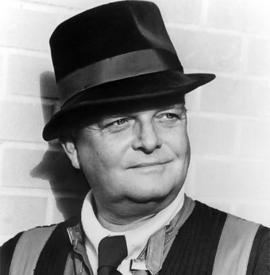

Truman Capote
(Truman Streckfus Persons; Nueva Orleans, 1924 - Los Ángeles, 1984) Novelista estadounidense. Pese al carácter profundamente realista de su obra, combinó en sus narraciones el misterio y el refinamiento literario, poniendo de manifiesto las oscuras profundidades psicológicas del sistema norteamericano a través de caracteres inquietantes, como en el caso de A sangre fría (1966), la más famosa de sus novelas.
Página creada para la clase de Programación Web 2017 ITO| Docente: ISC. Antonio Hernandez Blas